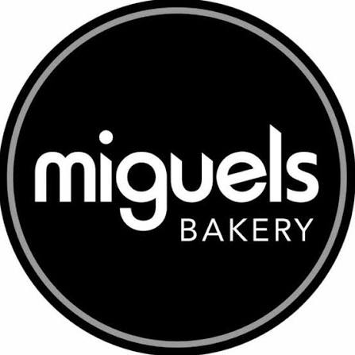
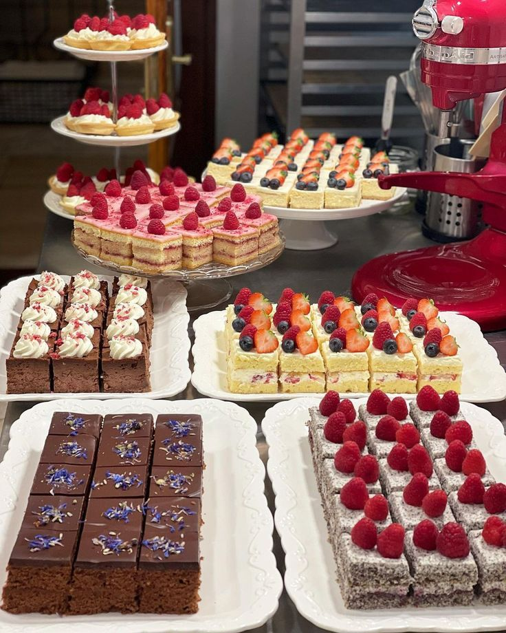

Custom Cakes
Birthday cakes, wedding cakes and cakes for other special occasions.

Miguel's Bakery Freshly Baked with CareOur Story
Welcome to Miguel's Bakery, a local bakery serving customers in Pietermaritzburg, KwaZulu-Natal. We offer a variety of freshly baked products for everyday enjoyment and special celebrations.

Our Bakery
At Miguel's Bakery, we offer a variety of baked products made using ingredients such as fresh cream, chocolate, eggs, fresh fruit, nuts and butter.
Our product selection includes cakes, pastries, doughnuts, biscuits, muffins, tarts, desserts, special breads and fancy rolls.
We also cater for different occasions and customer requirements, including custom-designed birthday cakes, wedding cakes and other special treats.
Freshly Prepared
Our bakery offers freshly prepared products suitable for breakfast, snacks, family meals and celebrations.
From golden bread and delicious pastries to sweet treats, we aim to provide products that customers can enjoy and share.

What We Offer
Birthday cakes, wedding cakes and cakes for other special occasions.
.jpeg)
Cakes, pastries, doughnuts, biscuits, muffins, breads and other treats.

Bakery products for catering companies, schools, hospitals, hotels, restaurants and special engagements.
To provide customers with quality, fresh and appealing bakery products while offering friendly and convenient service.
To be a trusted local bakery in Pietermaritzburg known for quality baked products, good customer service and a welcoming experience.
Providing freshly prepared bakery products.
Using carefully selected ingredients.
Making customers feel welcome and valued.
Working to meet customer requirements.
Serving customers in our local community.
Get in touch with us to find out more about our bakery products and services.
Contact Us